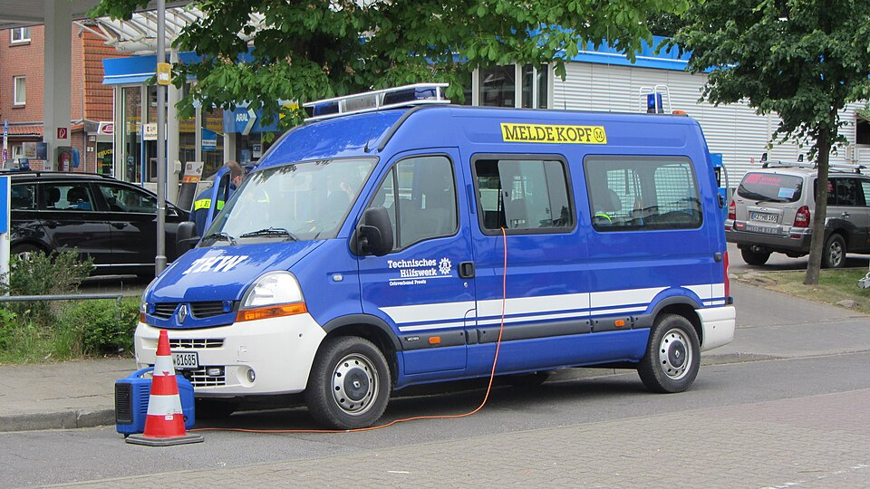
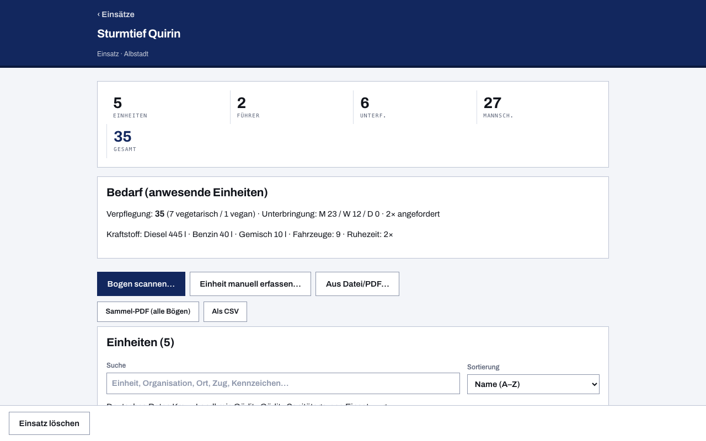

Meldekopf digital: Kräfteerfassung im Bereitstellungsraum
Am Meldekopf entscheidet sich, ob eine Lage führbar ist: Hier melden sich die eintreffenden Einheiten an, hier entsteht die Übersicht über Kräfte und Mittel — wer mit welcher Stärke, welchen Einsatzmitteln und welchem Bedarf bereitsteht. Auf Papier heißt das: Bögen stapeln, Stärken mit dem Taschenrechner addieren, bei jeder Neumeldung von vorn. Diese App macht daraus einen Scan — und sie tut das bewusst ohne Server, ohne Anmeldung und ohne Internet, denn genau darauf ist im Bereitstellungsraum kein Verlass.
Einsatz-Sammlung in der App öffnen

Eintreffende Einheiten erfassen — auf vier Wegen
- QR-Code scannen: Bringt die Einheit einen Bogen aus dieser App mit (auf Papier oder auf dem Bildschirm), genügt dir ein Scan — der komplette Bogen steckt im Code, nicht bloß ein Link.
- Aus Datei oder PDF laden: Auch per Datei übergebene Bögen und die PDF-Ausgaben der App liest du direkt ein.
- Am Tablet schnell erfassen: Kommt eine Einheit ohne Bogen, brauchst du wenige Minuten — Stärke über große Touch-Zähler, Führungskraft, Fahrzeuge, fertig.
- Aus dem offenen Bogen übernehmen: Einen gerade ausgefüllten Bogen holst du mit einem Klick in die Einsatz-Sammlung.
Stärkeübersicht: immer aktuell summiert
Die App zählt Führer, Unterführer, Mannschaft und Gesamtstärke über alle anwesenden Einheiten laufend zusammen und bildet Zwischensummen je Zug — die Frage „Wie viele Kräfte stehen bereit?" kannst du damit jederzeit ohne Rechnen beantworten. Wie eine einzelne Meldung aufgebaut ist, aus der diese Summe entsteht, erklärt die Seite Stärkemeldung der Feuerwehr. Auch der Sofortbedarf (Verpflegung, Unterkunft, Kraftstoff, Material) wird über alle Einheiten gesammelt statt in zwanzig Einzelbögen zu stecken.
Folgemeldungen und Schichtübergabe
Meldet sich eine Einheit erneut — neue Schicht, geänderte Stärke, abgemeldetes Fahrzeug —, zeigt die App den Unterschied zur letzten Meldung: Stärke 12 → 9, Fahrzeug abgemeldet, Ruhezeit jetzt nötig. Tägliche Neumeldungen werden als Historie gestapelt, nichts wird überschrieben. Die Sammel-PDF beginnt mit genau dieser Übersicht, eine Zeile je Einheit — das ist die Schichtübergabe auf einem Blatt.
Kräfteübersicht weitergeben
Den gesamten Einsatz druckst du als Sammel-PDF oder gibst ihn als Datei weiter — eine Kräfteübersicht mit einer Zeile je Einheit und den Summen darunter, wie die nächste Führungsstelle sie braucht; die Tabellen exportierst du bei Bedarf als CSV für die Stabsarbeit. Und wenn du prüfen willst, woher ein Bogen stammt: Bögen können eine Ed25519-Signatur tragen, freiwillige Absenderangaben machen Rückfragen möglich.

So läuft es am Meldekopf
- Leg auf dem Tablet einen neuen Einsatz (oder eine Übung) an.
- Scanne eintreffende Einheiten — oder erfasse sie in Minuten manuell.
- Lies Stärke- und Bedarfs-Summen laufend ab; Folgemeldungen ersetzen die alte Meldung nicht, sondern zeigen dir die Änderung.
- Gib Sammel-PDF oder Datei an die nächste Führungsstelle.
Damit die Einheiten schon mit fertigem Bogen anrücken, gibt es passende Einstiege mit Vorbelegungen — etwa um Feuerwehr-Einheiten erfassen zu lassen oder THW-Einheiten erfassen zu lassen; ebenso für DLRG und den Katastrophenschutz der Länder.
Häufige Fragen
Taugt das für die Kräfteerfassung im Bereitstellungsraum?
Dafür ist es gebaut. Der Bereitstellungsraum ist die Stelle, an der Einheiten warten, bis sie eingeteilt werden — und genau dort brauchst du eine belastbare Übersicht über Kräfte und Mittel: welche Einheiten da sind, mit welcher Stärke, mit welchen Einsatzmitteln und wie lange sie noch ohne Ablösung durchhalten. Ob du am Meldekopf, im Bereitstellungsraum oder als Zugführer die Einheiten deines Abschnitts führst, ändert am Ablauf nichts.
Braucht der Meldekopf dafür Internet?
Nein. Die Übernahme per QR-Code funktioniert vollständig offline, und die App selbst arbeitet nach dem ersten Aufruf ohne Netz weiter. Es gibt keinen Server, auf dem dein Einsatz liegt — alles bleibt auf dem Tablet.
Was passiert, wenn ich dieselbe Einheit zweimal scanne?
Die App erkennt die Einheit wieder und behandelt deinen Scan als neue Meldung derselben Einheit: Die Historie wächst, die Summen stimmen — es entstehen keine Doppelzählungen.
Kann ich mehrere Einsätze gleichzeitig führen?
Ja. Einsätze und Übungen führst du getrennt; jede Sammlung hat ihre eigenen Einheiten, Summen und Historien und lässt sich einzeln als PDF oder Datei weitergeben.